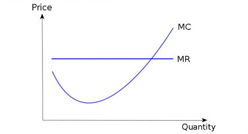
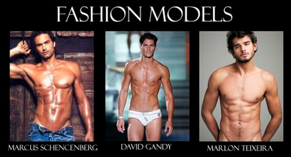
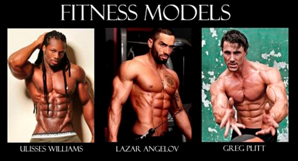
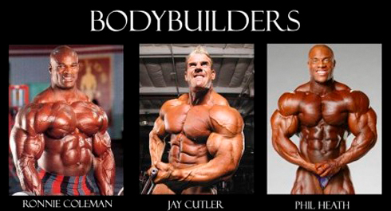

It is said that there is no limit to perfection, but I think that a lot of our participants question themselves how to define if they have already reached their optimal result or not yet. To answer this question I would like to give you a little walk to an economics theory.
One of the first things you get to know studying Mircoeconomics is Marginal Costs. To make it simple it is the costs which are created by producing one additional unit of goods. According to economics theory it is logical to continue growing the production until Marginal Costs become equal to Price of the goods (per unit). If production costs (including marginal costs) are lower than Price then we get profit, if they are equal, then we are conquering the market (without profit) and if they are higher than Price, then we are losing money! The very important moment you have to pay attention is that Marginal Costs, at first, decreases, then they stabilizes, then start to grow and then to grow rapidly. Let's have a look at the graph:

When we were talking about dieting as a lifestyle, we have already told you that your appearance is a consequence of a lifestyle you are living. Your lifestyle is a sum of different actions and decisions you make throught on a daliy basis. We sleep, we eat, we go to work, we eat again, we train, we go to sleep, repeat. But if you want to look good and be healthy, then you have to think about what you eat and how you train. You cant eat junk food and watch TV while running on a treadmill and hope to get good results!
I'm pushing you to the next idea. Let's imagine all people as a continuum. On the one side there are people who don't care about their health at all. They know nothing about clean food, they don't spend a single moment training and they look accordingly, some better, some worse. On the other side we will have bodybuilders and fitness models which amuze us with their physiques from the covers of magazines and internet articles. Their day is written down to minutes, what to eat, when to train etc, they spend a lot of money on different supplements (sometimes illegal), and this gives them RESULTS. But they dedicate all their life getting this results. Well, all other people fit somewhere between this two sides, and you and me too.



One of the goals of our 100 Days WorkOut program is to show people how to become stronger, healthier and sexier only because of regular bodyweight training and clean eating habits. No fancy fitness clubs, no personal trainers, no supplements, no strict dieting. We also have published results people get from WorkOut (and they are NOT professinal athletes or fitness models). And this results are achievable for everyone or almost everyone.
The whole question is how much time and energy you are ready to dedicate to this process. Ofcause, the more you do, the better your results will be, but you need to understand that you will have to make sacrifices on this way. After finishing our 100 Days WorkOut program you will reach a decent level and you will get a habit of regular training. If you will be satisfied, then all you will have to do is to keep that level. But if you will want to go futher, then you will have to do more! More strictly approach to diet, more training, less resting etc. And the greater the result you want to achieve, the more effors you will need. Should I mention that this efforts will bring you less and less results (marginal results I mean)?
So it's up to you to decide whether you have reached your optimal result or you are still working on it.